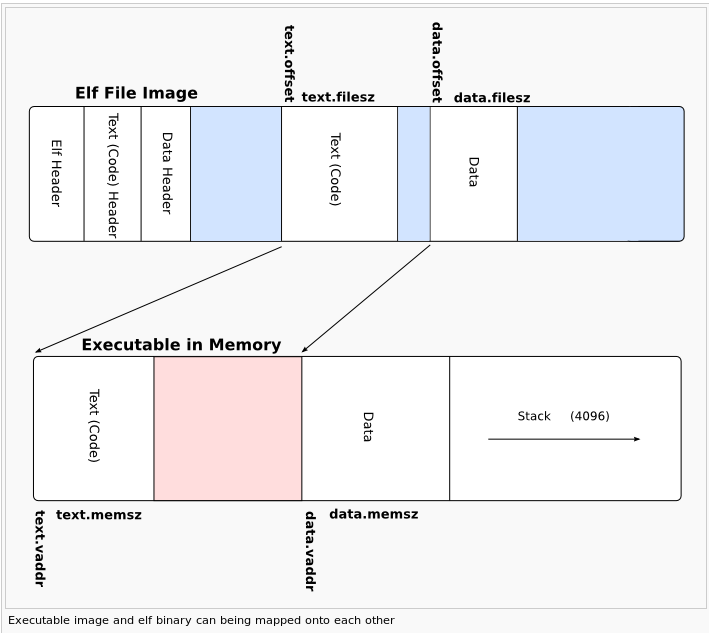

C32/kernel/bin/.process.o
architecture: i386, flags 0x00000011:
HAS_RELOC, HAS_SYMS
start address 0x00000000
Sections:
Idx Name Size VMA LMA File off Algn
0 .text 00000333 00000000 00000000 00000040 2**4
CONTENTS, ALLOC, LOAD, RELOC, READONLY, CODE
1 .data 00000050 00000000 00000000 00000380 2**5
CONTENTS, ALLOC, LOAD, DATA
2 .bss 00000000 00000000 00000000 000003d0 2**2
ALLOC
3 .note 00000014 00000000 00000000 000003d0 2**0
CONTENTS, READONLY
4 .stab 000020e8 00000000 00000000 000003e4 2**2
CONTENTS, RELOC, READONLY, DEBUGGING
5 .stabstr 00008f17 00000000 00000000 000024cc 2**0
CONTENTS, READONLY, DEBUGGING
6 .rodata 000001e4 00000000 00000000 0000b400 2**5
CONTENTS, ALLOC, LOAD, READONLY, DATA
7 .comment 00000023 00000000 00000000 0000b5e4 2**0
CONTENTS, READONLY| click me | click me |
|---|---|
| .text | where code stands, as said above. objdump -drS .process.o will show you that |
| .data | where global tables, variables, etc. stand. objdump -s -j .data .process.o will hexdump it. |
| .bss | don't look for bits of .bss in your file: there's none. That's where your uninitialized arrays and variable are, and the loader 'knows' they should be filled with zeroes ... there's no point storing more zeroes on your disk than there already are, is it? |
| .rodata | that's where your strings go, usually the things you forgot when linking and that cause your kernel not to work. objdump -s -j .rodata .process.o will hexdump it. Note that depending on the compiler, you may have more sections like this. |
| .comment & .note | just comments put there by the compiler/linker toolchain |
| .stab & .stabstr | debugging symbols & similar information. |
